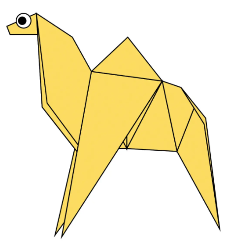
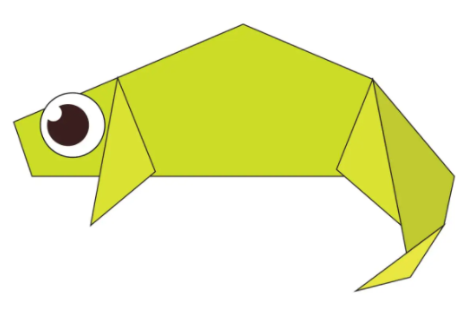
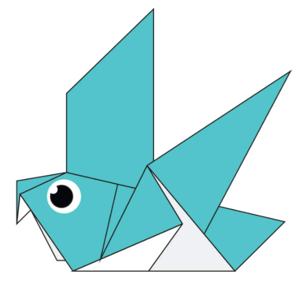
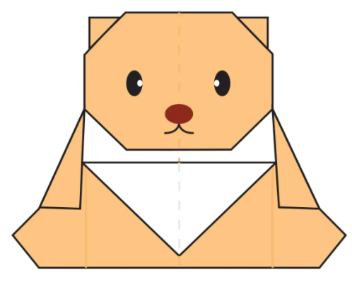
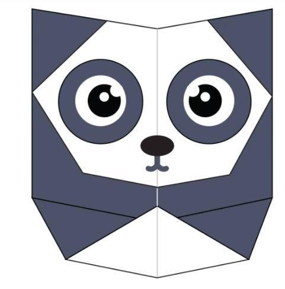
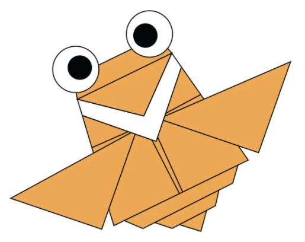

ORIGAMI DESIGNS
About Us
Follow Us

INTRESTING FACTS ABOUT CAMEL
- CAMELS HAVE FURRY EARS.
- CAMELS CAN COMPLETELY SHUT THEIR NOSTRILS DURING SANDSTROM.
- WHEN A CAMEL FINALLY DOES FIND WATER, HE CAN DRINK UPTO 40 GALLONS IN ONE GO.

INTRESTING FACTS ABOUT CHAMELEON
- SKIN CRYSTALS ENABLE THEM TO CHANGE COLOR AT WILL.
- ALMOST HALF OF ALL KNOWN SPECIES LIVE IN MADAGASCAR.
- THEY MAINLY CHANGE COLOR IN ORDER TO COMMUNICATE OR REGULATE BODY TEMPERATURE.

INTRESTING FACTS ABOUT PIGEON
- PIGEONS CAN UNDERSTAND SPACE AND TIME.
- DODOS WERE RELATED TO TODAY'S PIGEONS.
- PIGEONS CAN FIND THEIR WAY BACK TO THE NEST FROM 1300 MILES AWAY.

INTRESTING FACTS ABOUT TEDDY-BEAR
- THE TERM BEAR-HUG WAS FIRST RECORDED IN 1846.
- THE OXFORD DICTIONARY DATES THE FIRST USE OF TERM TEDDY-BEAR TO 1906.
- THE INCIDENT OF ROOSEVELET SPARING THE BEAR LED TO THE POPULARITY OF TEDDY-BEAR.

INTRESTING FACTS ABOUT PANDA
- PANDAS SPEND A LOT OF THEIR DAY EATING.
- THEY HAVE GREAT CAMOUFLAGE FOR THEIR ENVIRONMENT.
- PANDAS OCCASIONALLY EAT SOMETHING RATHER THAN BAMBOO.

INTRESTING FACTS ABOUT FLYING-CICADA
- CICADAS HAVE FIVE EYES.
- THEY USE THEIR COLOUR TO WARM UP.
- THERE ARE MORE THAN 17 BILLION CICADAS.